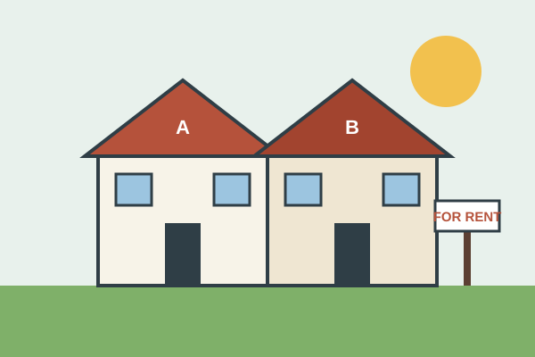

Why I Follow the Utah Market
Real estate investing is the thing I can't stop thinking about. I appraise homes, I've interned with real estate firms, and I live in Provo, which sits in one of the fastest-growing counties in the country. This page is where I keep track of what Utah's housing market is doing and how I think about a deal before I'd ever put money into it.

A small duplex is the classic first rental for a lot of Utah investors.
Utah Market Tracker
Median single-family sale prices from the most recent reports. Last updated November 2026.
| Market | Median Price | Change (YoY) | Period |
|---|---|---|---|
| Utah (statewide, all MLSs) | $530,000 | +1.9% | Sep 2026 |
| Salt Lake County | $645,000 | +4.9% | Q2 2026 |
| Utah County | $600,000 | -0.8% | Q2 2026 |
| Davis County | $568,450 | -1.6% | Q2 2026 |
| Weber County | $499,000 | +3.1% | Q2 2026 |
| Tooele County | $487,495 | -1.5% | Q2 2026 |
| Wasatch County | ~$1,200,000 | ~+21% | Q1 2026 |
| Summit County | ~$2,200,000 | ~-5% | Q1 2026 |
My takeaway: Utah prices are basically flat to slightly up statewide. Salt Lake County keeps setting records, while Utah County, my home market, cooled a little. For an investor, a flat market means the deal has to work on cash flow today, not on hoped-for appreciation.
My Deal Checklist
Before I'd make an offer on a Utah rental, I'd work through these steps in order:
- Pick the submarket
- Job growth (Silicon Slopes in Lehi and Draper)
- Population growth (Utah County is projected to roughly double by 2065)
- Landlord-friendly rules and HOA restrictions
- Find the true income
- Market rent from comparable rentals, not the seller's pro forma
- A vacancy allowance (I use 5% to 8%)
- Subtract real operating expenses
- Property taxes, insurance, repairs, management
- A capital reserve for roofs, HVAC and water heaters
- Calculate NOI and cap rate (see the cap rate triangle in the sidebar)
- Stress-test the financing at today's interest rates
Utah Housing Outlook for 2026
A quick news segment on where Utah's housing market was expected to head this year.